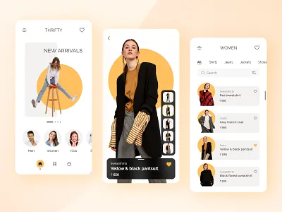
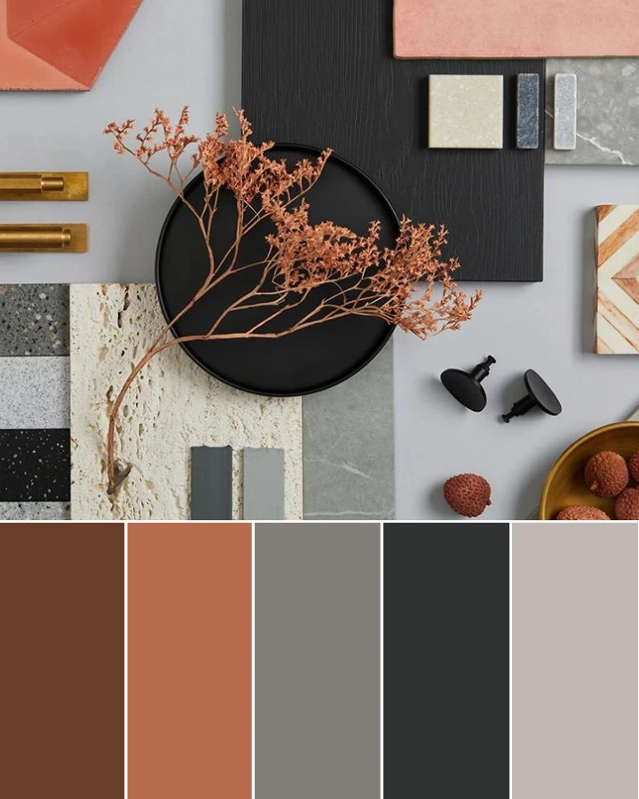
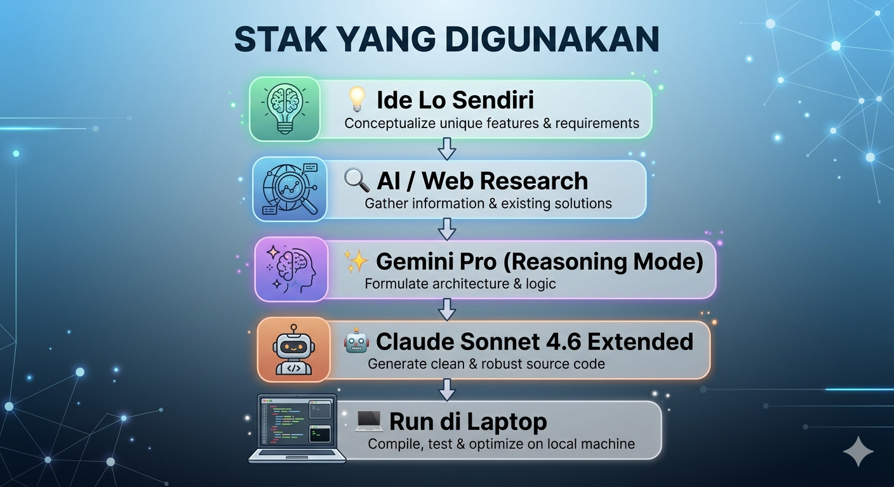

Dari ide lu → riset AI → desain Claude → live di laptop. No cap, no fluff.
Sebelum belajar workflow, penting banget ngerti cara kerja otak Gen Z — biar konten lo (dan landing page lo) nggak langsung di-skip.
Hook dalam 3 detik pertama. Visual > teks panjang. Chunk kecil-kecil. Satu CTA yang jelas. Authentic beats polished.
Berdasarkan data dan tren 2025–2026, ini satu industri yang paling konkret, low-cost, dan native Gen Z.
Paling banyak dipilih Gen Z sebagai bisnis pertama. Mulai dari Depop, Instagram, sampai website sendiri. Modal awal kecil, kurasi produk bisa pakai taste sendiri, dan market-nya nggak ada habisnya.

Yang dibutuhkan bisnis ini:
Gen Z punya estetika yang sangat spesifik. Kalau landing page lo nggak vibes, mereka cabut dalam detik.

4 tahap dari ide ke landing page yang jalan di laptop lo. Efisien, sistematis, dan tetap lo yang control creative-nya.
AI itu asisten, bukan pengganti ide lo. Lo yang kasih arah, AI yang eksekusi detail. Kreativitas tetap 100% punya lo.
Nentuin bisnis, brand name, produk, target market, dan "feeling" yang lo mau.
Creative DirectionCari referensi visual, kompetitor, dan konten untuk website. Bisa pakai Google, Pinterest, Dribbble.
Research & ReferencesKasih brief mentah lo, minta Gemini untuk expand jadi prompt yang kaya detail — spesifik soal layout, warna, fungsi, interaksi.
Prompt ArchitectPaste prompt dari Gemini ke Claude di claude.ai. Minta build HTML/CSS/JS lengkap — UI, UX, functions, animasi, form order.
Build UI/UX + LogicSave file .html, buka di browser. Atau upload ke GitHub Pages / Netlify buat live preview.
Local Development
Kenyataan workflow ini vs cara tradisional belajar coding sendiri.
Untuk testing ide bisnis secepat mungkin dengan effort minimal, workflow ini 9/10. Yang paling penting: lo tetap paham apa yang dibangun — bukan cuma copy-paste tanpa ngerti.
Bisnis: DEADSTOCK.ID — online thrift store vintage 90s & Y2K. Target: Gen Z 17–25 th. Order via WhatsApp.
// Paste ke gemini.google.com — aktifkan mode reasoning/pro Aku mau buat landing page untuk bisnis thrift store bernama DEADSTOCK.ID. Detail bisnis: - Jual baju vintage 90s & Y2K second-hand - Target: Gen Z umur 17-25 tahun di Indonesia - Order via WhatsApp, bayar COD/transfer - Stok terbatas, rilis per "drop" mingguan Tone & Visual: - Aesthetic: editorial, raw, film grain, moody bright - Warna: off-white background, hitam, accent kuning - Font: bold display font + clean sans-serif - Mobile-first (80% traffic dari HP) Fungsi yang dibutuhkan: - Hero section dengan nama brand yang bold - Galeri produk dengan harga - Tombol order yang langsung buka WhatsApp - Section "cara order" - Sticky footer dengan CTA Tolong generate DETAILED UI/UX prompt yang bisa langsung aku paste ke Claude AI untuk build HTML/CSS/JS single file website.
Build a complete single-file HTML landing page for DEADSTOCK.ID, a Gen Z vintage thrift store. Design System: - Background: #FAFAF7 (off-white) - Text: #0A0A0A (near black) - Accent: #E8D84B (yellow) - Font: Import Bebas Neue (display) + DM Sans (body) from Google Fonts Sections (in order): 1. HERO — Full viewport, brand name HUGE in Bebas Neue, subline italic, CTA button 2. PRODUCT GRID — 6 product cards with: - Placeholder image (gray box) - Item name, size, price - "ORDER" button per card 3. HOW TO ORDER — 3 steps numbered, clean layout 4. DROP SCHEDULE — Next drop countdown timer 5. FOOTER — Brand name + WhatsApp button Functionality: - All ORDER buttons open WhatsApp link: wa.me/6281234567890 with auto-message - Smooth scroll between sections - Mobile-first CSS (max-width 430px optimal) - Subtle scroll animations (IntersectionObserver) Output: Single .html file, all CSS+JS embedded.
Setelah Claude generate, kalau ada yang kurang, langsung bilang: "Perbesar font heronya 20%. Ganti warna tombol jadi hitam. Tambahkan section Instagram feed placeholder." Claude ingat konteks sebelumnya.
1. Simpan code dari Claude → File → Save As → index.html → Taruh di folder: /deadstock-id/ 2. Buka netlify.com → Login gratis (bisa pakai GitHub) → Klik "Add new site" → "Deploy manually" 3. Drag & drop folder → Drag folder /deadstock-id/ ke browser → Tunggu 30 detik 4. URL lo jadi: → deadstock-id.netlify.app ✓ → Bisa custom domain kapanpun // GitHub Pages juga bisa — lebih proper // tapi butuh basic git knowledge
Sebelum share ke siapapun: buka website di HP lo sendiri. Cek apakah tombol WhatsApp work, teks tidak terlalu kecil, dan scroll terasa smooth.
Setelah launch, langsung buat konten TikTok: "POV: aku build website bisnis pakai AI dalam 2 jam." Post proses + hasil. Ini marketing sekaligus bukti sosial.
More guides. More moves. Think. Question. Act.
Follow di TikTok